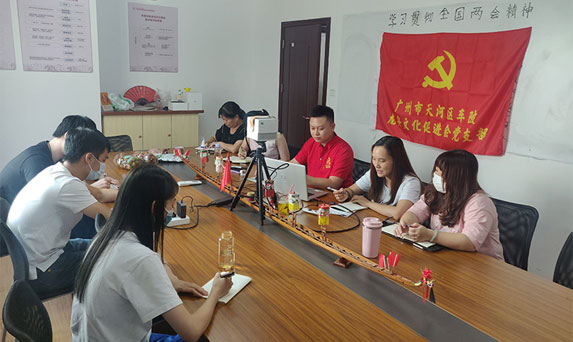

-

苏志均，广州市天河区车陂龙舟文化促进会党支。与愿服务队3支护河队伍，广织志愿服务网络。发展车陂小学、华师附小2支民间小河长队伍，大手拉小手，共同参与河涌治理。创建“民俗文化+河涌保护”志愿服务新模式，发起“一水同舟，守望相助”公益项目，打造“龙舟+碧道”新品牌，获广州市第二届十佳社会创新奖。建立以治水工作为主的全国公益合作项目河流守望发展中心、新生活环保促进会等。被评为广东省十大最美民间河湖长。所守护的车陂涌摘掉“黑臭帽”，重现“水清、人善、景美”，并入选全国治水典型案例。 苏志均，广州市天河区车陂龙舟文化促进会党支。与愿服务队3支护河队伍，广织志愿服务网络。发展车陂小学、华师附小2支民间小河长队伍，大手拉小手，共同参与河涌治理。创建“民俗文化+河涌保护”志愿服务新模式，发起“一水同舟，守望相助”公益项目，打造“龙舟+碧道”新品牌，获广州市第二届十佳社会创新奖。建立以治水工作为主的全国公益合作项目河流守望发展中心、新生活环保促进会等。被评为广东省十大最美民间河湖长。所守护的车陂涌摘掉“黑臭帽”，重现“水清、人善、景美”，并入选全国治水典型案例。 苏志均，广州市天河区车陂龙舟文化促进会党支。与愿服务队3支护河队伍，广织志愿服务网络。发展车陂小学、华师附小2支民间小河长队伍，大手拉小手，共同参与河涌治理。创建“民俗文化+河涌保护”志愿服务新模式，发起“一水同舟，守望相助”公益项目，打造“龙舟+碧道”新品牌，获广州市第二届十佳社会创新奖。建立以治水工作为主的全国公益合作项目河流守望发展中心、新生活环保促进会等。被评为广东省十大最美民间河湖长。所守护的车陂涌摘掉“黑臭帽”，重现“水清、人善、景美”，并入选全国治水典型案例。 苏志均，广州市天河区车陂龙舟文化促进会党支。与愿服务队3支护河队伍，广织志愿服务网络。发展车陂小学、华师附小2支民间小河长队伍，大手拉小手，共同参与河涌治理。创建“民俗文化+河涌保护”志愿服务新模式，发起“一水同舟，守望相助”公益项目，打造“龙舟+碧道”新品牌，获广州市第二届十佳社会创新奖。建立以治水工作为主的全国公益合作项目河流守望发展中心、新生活环保促进会等。被评为广东省十大最美民间河湖长。所守护的车陂涌摘掉“黑臭帽”，重现“水清、人善、景美”，并入选全国治水典型案例。
-
苏志均，广州市天河区车陂龙舟文化促进会党支部书记、民间河长、志水护河。与车陂街道办共同发起成立车陂涌悦和志愿服务队、车陂志愿服务队、车陂街河涌治理党员志愿服务队3支护河队伍，广织志愿服务网络。发展车陂小学、华师附小2支民间小河长队伍，大手拉小手，共同参与河涌治理。创建“民俗文化+河涌保护”志愿服务新模式，发起“一水同舟，守望相助”公益项目，打造“龙舟+碧道”新品牌，获广州市第二届十佳社会创新奖。建立以治水工作为主的全国公益合作项目河流守望发展中心、新生活环保促进会等。被评为广东省十大最美民间河湖长。所守护的车陂涌摘掉“黑臭帽”，重现“水清、人善、景美”，并入选全国治水典型案例。
-
苏志均，广州市天河区车陂龙舟文化促进会党与车陂街道办共同发起成立车陂涌悦和志愿服务队、车陂志愿服务队、车陂街河涌治理党员志愿服务队3支护河队伍，广织志愿服务网络。发展车陂小学、华师附小2支民间小河长队伍，大手拉小手，共同参与河涌治理。创建“民俗文化+河涌保护”志愿服务新模式，发起“一水同舟，守望相助”公益项目，打造“龙舟+碧道”新品牌，获广州市第二届十佳社会创新奖。建立以治水工作为主的全国公益合作项目河流守望发展中心、新生活环保促进会等。被评为广东省十大最美民间河湖长。所守护的车陂涌摘掉“黑臭帽”，重现“水清、人善、景美”，并入选全国治水典型案例。
-
苏志均，广州市天河区车与车陂街道办共同发起成立车陂涌悦和志愿服务队、车陂志愿服务队、车陂街河涌治理党员志愿服务队3支护河队伍，广织志愿服务网络。发展车陂小学、华师附小2支民间小河长队伍，大手拉小手，共同参与河涌治理。创建“民俗文化+河涌保护”志愿服务新模式，发起“一水同舟，守望相助”公益项目，打造“龙舟+碧道”新品牌，获广州市第二届十佳社会创新奖。建立以治水工作为主的全国公益合作项目河流守望发展中心、新生活环保促进会等。被评为广东省十大最美民间河湖长。所守护的车陂涌摘掉“黑臭帽”，重现“水清、人善、景美”，并入选全国治水典型案例。
-
苏志均，广州市天河区车陂龙舟文化促进会党支部书记、民间河长、志愿者。先后发起成立“车陂龙舟文化促进会”，开设微信公众号“车陂同舟”，带动市民参与治水护河。与车陂街道办共同发起成立车陂涌悦和志愿服务队、车陂志愿服务队、车陂街河涌治理党员志愿服务队3支护河队伍，广织志愿服务网络。发展车陂小学、华师附小2支民间小河长队伍，大手拉小手，共同参与河涌治理。创建“民俗文化+河涌保护”志愿服务新模式，发起“一水同舟，守望相助”公益项目，打造“龙舟+碧道”新品牌，获广州市第二届十佳社会创新奖。建立以治水工作为主的全国公益合作项目河流守望发展中心、新生活环保促进会等。被评为广东省十大最美民间河湖长。所守护的车陂涌摘掉“黑臭帽”，重现“水清、人善、景美”，并入选全国治水典型案例。
|
 京公网安备11040102700040号
京公网安备11040102700040号